<?xml version="1.0" encoding="UTF-8"?>
<rss version="2.0" xmlns:content="http://purl.org/rss/1.0/modules/content/" xmlns:wfw="http://wellformedweb.org/CommentAPI/" xmlns:dc="http://purl.org/dc/elements/1.1/" >

<channel><title><![CDATA[When God Made You - Our FIRSTS Corner]]></title><link><![CDATA[https://whengodmadeyou.weebly.com/our-firsts-corner]]></link><description><![CDATA[Our FIRSTS Corner]]></description><pubDate>Fri, 24 Apr 2026 19:56:19 +0800</pubDate><generator>Weebly</generator><item><title><![CDATA[First time niyang gawin ito (YURI)]]></title><link><![CDATA[https://whengodmadeyou.weebly.com/our-firsts-corner/first-time-niyang-gawin-ito-yuri]]></link><comments><![CDATA[https://whengodmadeyou.weebly.com/our-firsts-corner/first-time-niyang-gawin-ito-yuri#comments]]></comments><pubDate>Tue, 05 May 2020 16:00:00 GMT</pubDate><category><![CDATA[Uncategorized]]></category><guid isPermaLink="false">https://whengodmadeyou.weebly.com/our-firsts-corner/first-time-niyang-gawin-ito-yuri</guid><description><![CDATA[Mukhang nag-teething na talaga si Yuri namin.&nbsp;                        [...] ]]></description><content:encoded><![CDATA[<div class="paragraph">Mukhang nag-teething na talaga si Yuri namin.&nbsp;</div>  <div><div class="wsite-image wsite-image-border-none " style="padding-top:10px;padding-bottom:10px;margin-left:0;margin-right:0;text-align:center"> <a> 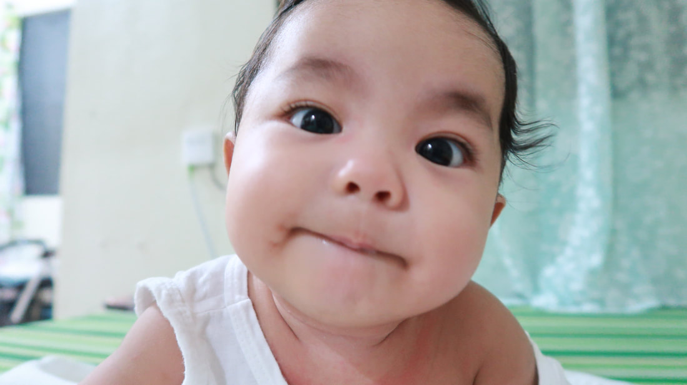 </a> <div style="display:block;font-size:90%"></div> </div></div>  <div><div class="wsite-image wsite-image-border-none " style="padding-top:10px;padding-bottom:10px;margin-left:0;margin-right:0;text-align:center"> <a> 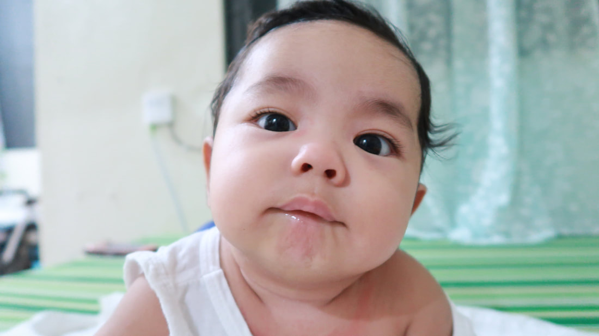 </a> <div style="display:block;font-size:90%"></div> </div></div>  <div><div class="wsite-image wsite-image-border-none " style="padding-top:10px;padding-bottom:10px;margin-left:0;margin-right:0;text-align:center"> <a> 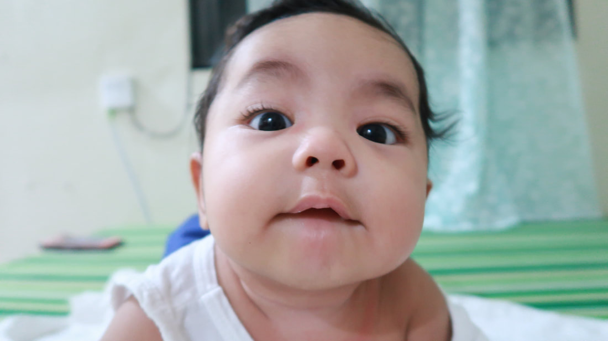 </a> <div style="display:block;font-size:90%"></div> </div></div>  ]]></content:encoded></item><item><title><![CDATA[First time mag-drawing ng "flower"]]></title><link><![CDATA[https://whengodmadeyou.weebly.com/our-firsts-corner/first-time-mag-drawing-ng-flower]]></link><comments><![CDATA[https://whengodmadeyou.weebly.com/our-firsts-corner/first-time-mag-drawing-ng-flower#comments]]></comments><pubDate>Sun, 03 May 2020 16:00:00 GMT</pubDate><category><![CDATA[Uncategorized]]></category><guid isPermaLink="false">https://whengodmadeyou.weebly.com/our-firsts-corner/first-time-mag-drawing-ng-flower</guid><description><![CDATA[May activity kami ni Yanah. Tapos, ako ang nagdradrawing. Maya maya ay kinuha sa akin ang pen at siya naman daw. So, heto na ang first drawing niya :)        [...] ]]></description><content:encoded><![CDATA[<div class="paragraph">May activity kami ni Yanah. Tapos, ako ang nagdradrawing. Maya maya ay kinuha sa akin ang pen at siya naman daw. So, heto na ang first drawing niya :)</div>  <div><div class="wsite-image wsite-image-border-none " style="padding-top:10px;padding-bottom:10px;margin-left:0;margin-right:0;text-align:center"> <a> 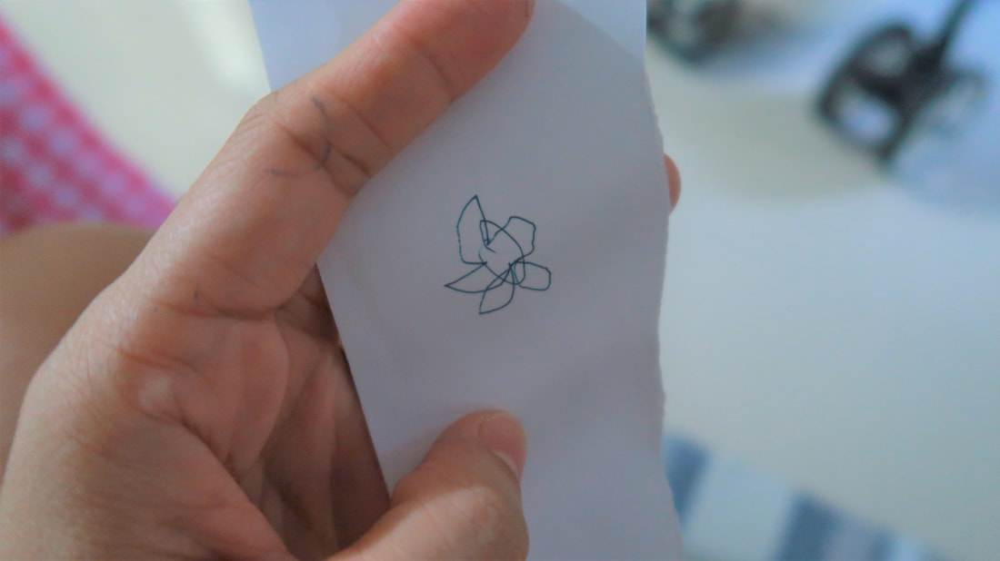 </a> <div style="display:block;font-size:90%"></div> </div></div>]]></content:encoded></item><item><title><![CDATA[First time - Kinagat si Mommy]]></title><link><![CDATA[https://whengodmadeyou.weebly.com/our-firsts-corner/first-time-kinagat-si-mommy]]></link><comments><![CDATA[https://whengodmadeyou.weebly.com/our-firsts-corner/first-time-kinagat-si-mommy#comments]]></comments><pubDate>Tue, 28 Apr 2020 11:17:14 GMT</pubDate><category><![CDATA[Uncategorized]]></category><guid isPermaLink="false">https://whengodmadeyou.weebly.com/our-firsts-corner/first-time-kinagat-si-mommy</guid><description><![CDATA[Yes po, , kinagat ako ni Yuri!&nbsp;&#8203; [...] ]]></description><content:encoded><![CDATA[<div class="paragraph">Yes po, , kinagat ako ni Yuri!&nbsp;<br /><br />&#8203;<br /></div>]]></content:encoded></item><item><title><![CDATA[First time - Makaligo sa timba]]></title><link><![CDATA[https://whengodmadeyou.weebly.com/our-firsts-corner/first-time-makaligo-sa-timba]]></link><comments><![CDATA[https://whengodmadeyou.weebly.com/our-firsts-corner/first-time-makaligo-sa-timba#comments]]></comments><pubDate>Mon, 10 Feb 2020 16:00:00 GMT</pubDate><category><![CDATA[Uncategorized]]></category><guid isPermaLink="false">https://whengodmadeyou.weebly.com/our-firsts-corner/first-time-makaligo-sa-timba</guid><description><![CDATA[                           [...] ]]></description><content:encoded><![CDATA[<div><div class="wsite-image wsite-image-border-none " style="padding-top:10px;padding-bottom:10px;margin-left:0;margin-right:0;text-align:center"> <a> 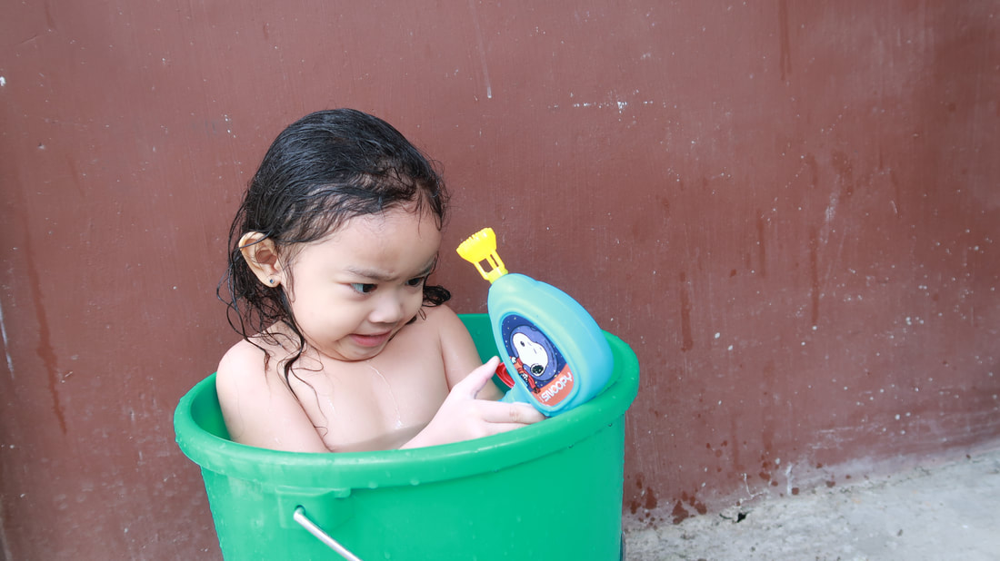 </a> <div style="display:block;font-size:90%"></div> </div></div>  <div><div class="wsite-image wsite-image-border-none " style="padding-top:10px;padding-bottom:10px;margin-left:0;margin-right:0;text-align:center"> <a> 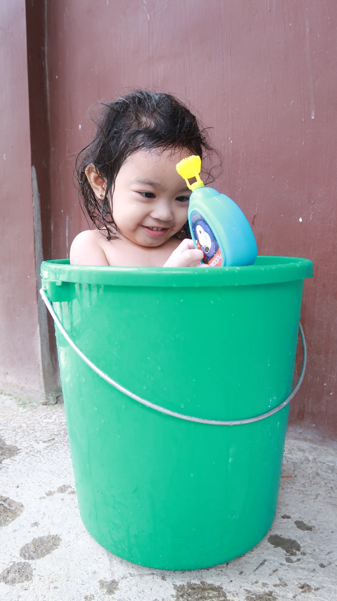 </a> <div style="display:block;font-size:90%"></div> </div></div>  <div><div class="wsite-image wsite-image-border-none " style="padding-top:10px;padding-bottom:10px;margin-left:0;margin-right:0;text-align:center"> <a> 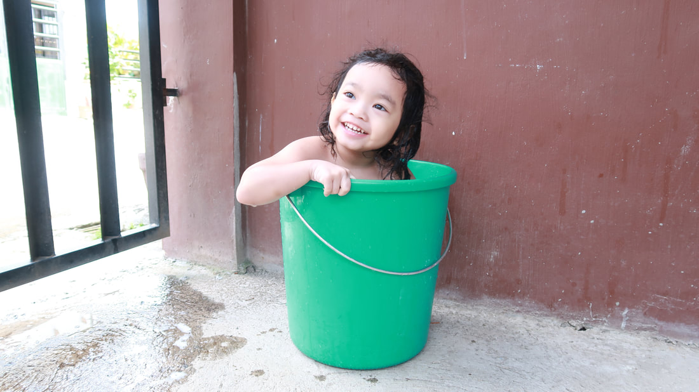 </a> <div style="display:block;font-size:90%"></div> </div></div>  <div><div class="wsite-image wsite-image-border-none " style="padding-top:10px;padding-bottom:10px;margin-left:0;margin-right:0;text-align:center"> <a> 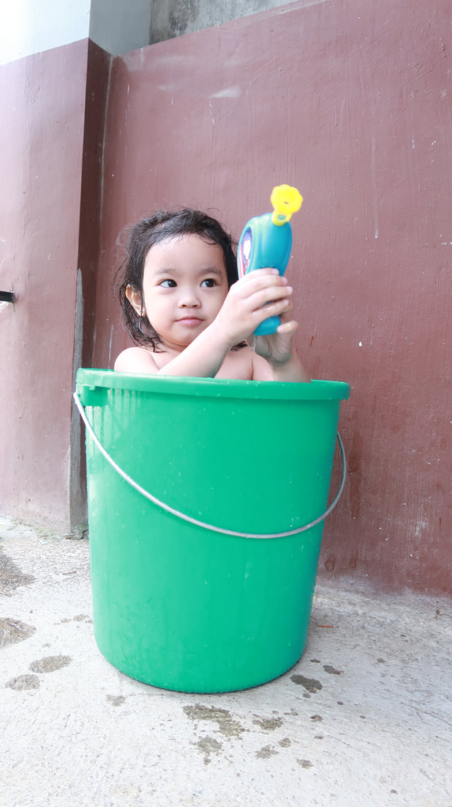 </a> <div style="display:block;font-size:90%"></div> </div></div>]]></content:encoded></item><item><title><![CDATA[First Time - Bahay bahayan niya sa LIPA]]></title><link><![CDATA[https://whengodmadeyou.weebly.com/our-firsts-corner/first-time-bahay-bahayan-niya-sa-lipa]]></link><comments><![CDATA[https://whengodmadeyou.weebly.com/our-firsts-corner/first-time-bahay-bahayan-niya-sa-lipa#comments]]></comments><pubDate>Sun, 09 Feb 2020 16:00:00 GMT</pubDate><category><![CDATA[Uncategorized]]></category><guid isPermaLink="false">https://whengodmadeyou.weebly.com/our-firsts-corner/first-time-bahay-bahayan-niya-sa-lipa</guid><description><![CDATA[                           [...] ]]></description><content:encoded><![CDATA[<div><div class="wsite-image wsite-image-border-none " style="padding-top:10px;padding-bottom:10px;margin-left:0;margin-right:0;text-align:center"> <a> 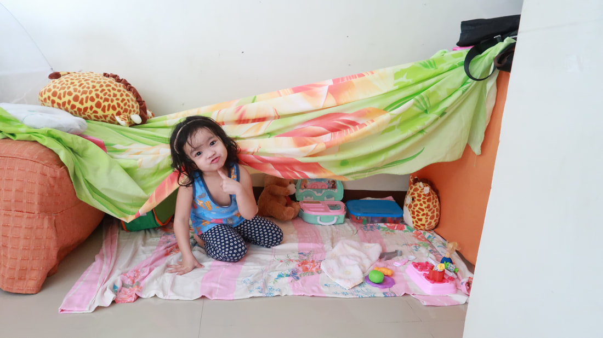 </a> <div style="display:block;font-size:90%"></div> </div></div>  <div><div class="wsite-image wsite-image-border-none " style="padding-top:10px;padding-bottom:10px;margin-left:0;margin-right:0;text-align:center"> <a> 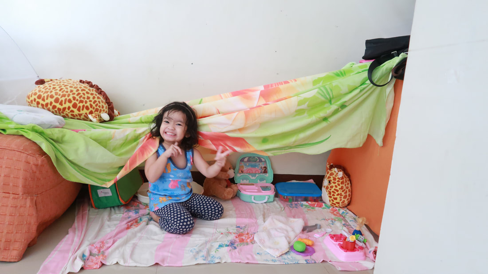 </a> <div style="display:block;font-size:90%"></div> </div></div>  <div><div class="wsite-image wsite-image-border-none " style="padding-top:10px;padding-bottom:10px;margin-left:0;margin-right:0;text-align:center"> <a> 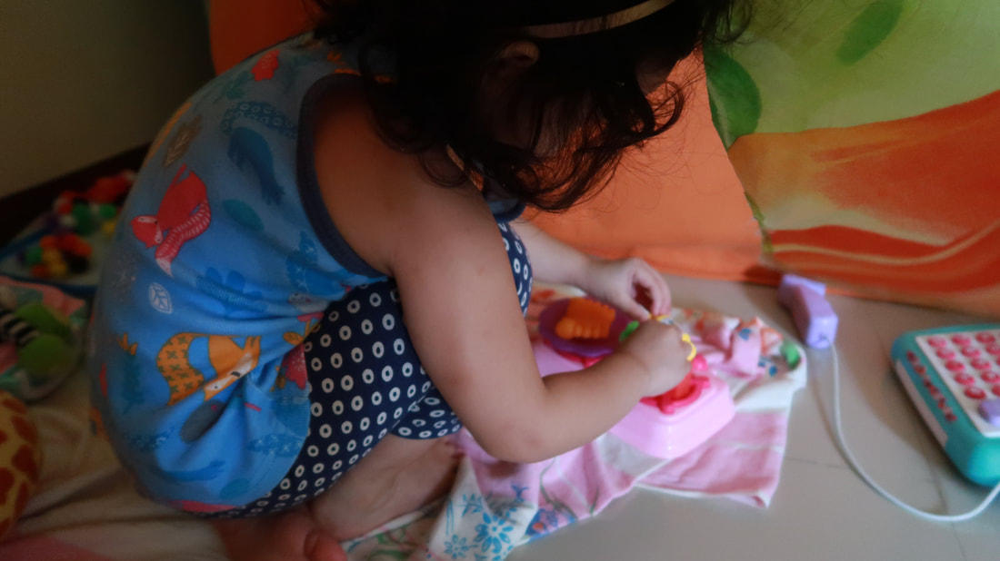 </a> <div style="display:block;font-size:90%"></div> </div></div>  <div><div class="wsite-image wsite-image-border-none " style="padding-top:10px;padding-bottom:10px;margin-left:0;margin-right:0;text-align:center"> <a> 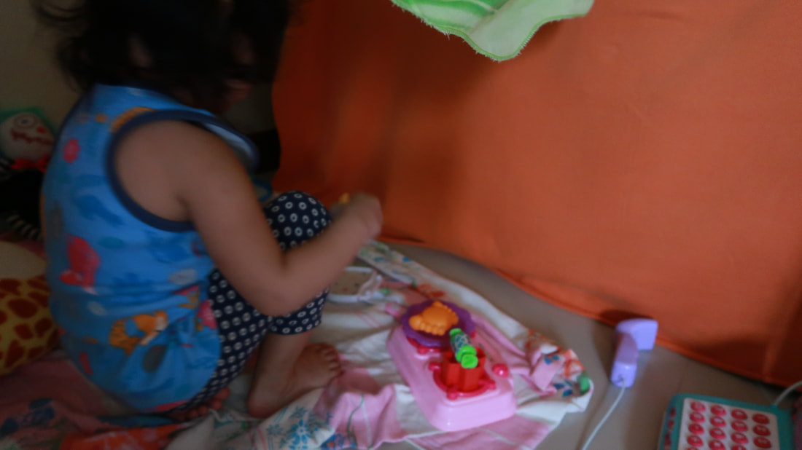 </a> <div style="display:block;font-size:90%"></div> </div></div>]]></content:encoded></item><item><title><![CDATA[First Time - Makapagkulay ng hindi lampas lampas]]></title><link><![CDATA[https://whengodmadeyou.weebly.com/our-firsts-corner/first-time-makapagkulay-ng-hindi-lampas-lampas]]></link><comments><![CDATA[https://whengodmadeyou.weebly.com/our-firsts-corner/first-time-makapagkulay-ng-hindi-lampas-lampas#comments]]></comments><pubDate>Sun, 09 Feb 2020 16:00:00 GMT</pubDate><category><![CDATA[Uncategorized]]></category><guid isPermaLink="false">https://whengodmadeyou.weebly.com/our-firsts-corner/first-time-makapagkulay-ng-hindi-lampas-lampas</guid><description><![CDATA[                    [...] ]]></description><content:encoded><![CDATA[<div><div class="wsite-image wsite-image-border-none " style="padding-top:10px;padding-bottom:10px;margin-left:0;margin-right:0;text-align:center"> <a>  </a> <div style="display:block;font-size:90%"></div> </div></div>  <div><div class="wsite-image wsite-image-border-none " style="padding-top:10px;padding-bottom:10px;margin-left:0;margin-right:0;text-align:center"> <a> 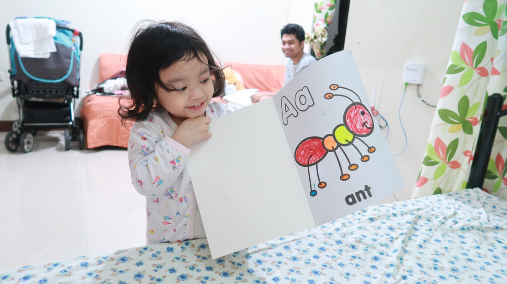 </a> <div style="display:block;font-size:90%"></div> </div></div>  <div><div class="wsite-image wsite-image-border-none " style="padding-top:10px;padding-bottom:10px;margin-left:0;margin-right:0;text-align:center"> <a> 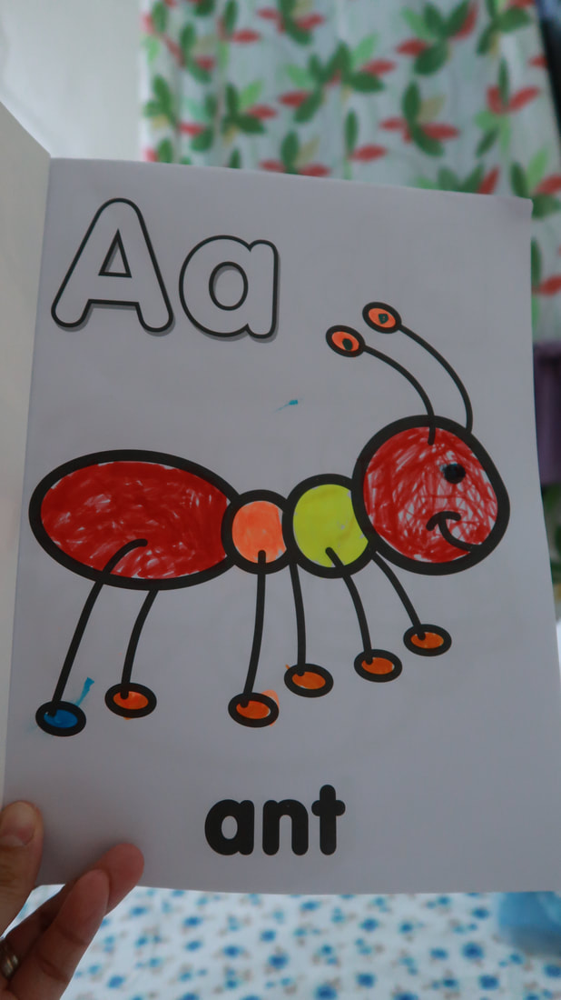 </a> <div style="display:block;font-size:90%"></div> </div></div>]]></content:encoded></item><item><title><![CDATA[First time - Makapagsuot ng Rain coat at maglaro sa ambon!]]></title><link><![CDATA[https://whengodmadeyou.weebly.com/our-firsts-corner/first-time-makapagsuot-ng-rain-coat-at-maglaro-sa-ambon]]></link><comments><![CDATA[https://whengodmadeyou.weebly.com/our-firsts-corner/first-time-makapagsuot-ng-rain-coat-at-maglaro-sa-ambon#comments]]></comments><pubDate>Sat, 01 Feb 2020 16:00:00 GMT</pubDate><category><![CDATA[Uncategorized]]></category><guid isPermaLink="false">https://whengodmadeyou.weebly.com/our-firsts-corner/first-time-makapagsuot-ng-rain-coat-at-maglaro-sa-ambon</guid><description><![CDATA[               	 		 			 				 					 						          					 								 					 						          					 							 		 	         [...] ]]></description><content:encoded><![CDATA[<div><div class="wsite-image wsite-image-border-none " style="padding-top:10px;padding-bottom:10px;margin-left:0;margin-right:0;text-align:center"> <a> 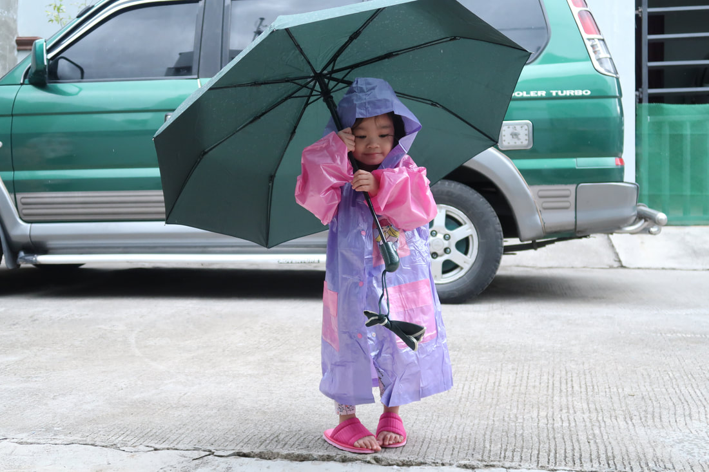 </a> <div style="display:block;font-size:90%"></div> </div></div>  <div><div class="wsite-image wsite-image-border-none " style="padding-top:10px;padding-bottom:10px;margin-left:0;margin-right:0;text-align:center"> <a> 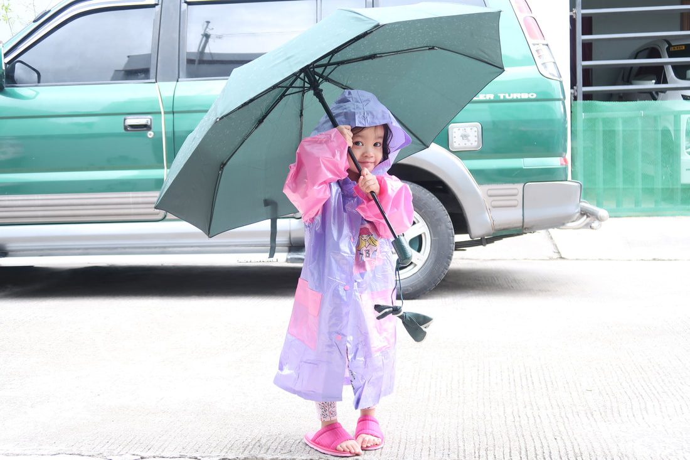 </a> <div style="display:block;font-size:90%"></div> </div></div>  <div><div class="wsite-multicol"><div class="wsite-multicol-table-wrap" style="margin:0 -15px;"> 	<table class="wsite-multicol-table"> 		<tbody class="wsite-multicol-tbody"> 			<tr class="wsite-multicol-tr"> 				<td class="wsite-multicol-col" style="width:50%; padding:0 15px;"> 					 						  <div><div class="wsite-image wsite-image-border-none " style="padding-top:10px;padding-bottom:10px;margin-left:0;margin-right:0;text-align:center"> <a> 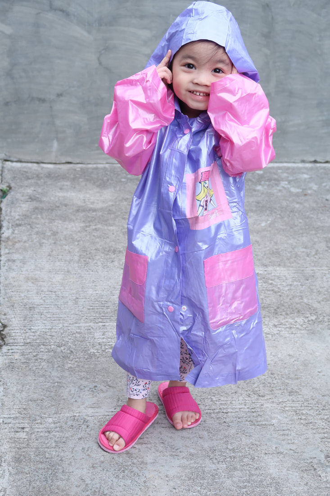 </a> <div style="display:block;font-size:90%"></div> </div></div>   					 				</td>				<td class="wsite-multicol-col" style="width:50%; padding:0 15px;"> 					 						  <div><div class="wsite-image wsite-image-border-none " style="padding-top:10px;padding-bottom:10px;margin-left:0;margin-right:0;text-align:center"> <a> 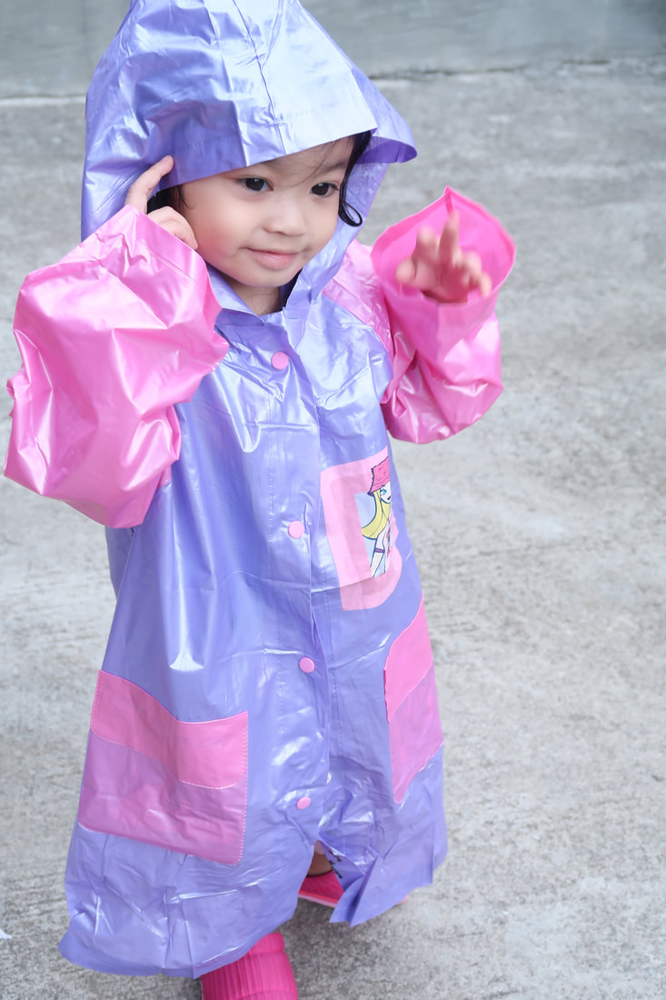 </a> <div style="display:block;font-size:90%"></div> </div></div>   					 				</td>			</tr> 		</tbody> 	</table> </div></div></div>  <div><div class="wsite-image wsite-image-border-none " style="padding-top:10px;padding-bottom:10px;margin-left:0;margin-right:0;text-align:center"> <a> 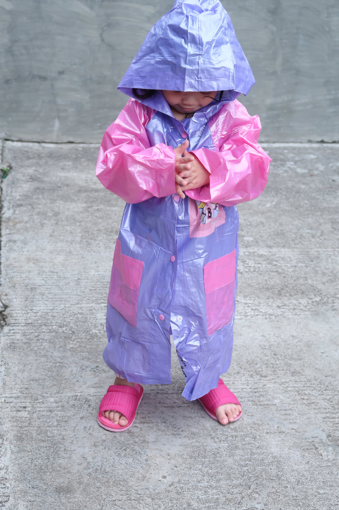 </a> <div style="display:block;font-size:90%"></div> </div></div>]]></content:encoded></item><item><title><![CDATA[Mommy, Blanket..]]></title><link><![CDATA[https://whengodmadeyou.weebly.com/our-firsts-corner/mommy-blanket]]></link><comments><![CDATA[https://whengodmadeyou.weebly.com/our-firsts-corner/mommy-blanket#comments]]></comments><pubDate>Tue, 08 Oct 2019 14:52:19 GMT</pubDate><category><![CDATA[Uncategorized]]></category><guid isPermaLink="false">https://whengodmadeyou.weebly.com/our-firsts-corner/mommy-blanket</guid><description><![CDATA[Kagabi, hindi ako masyado nakatulog ng ayos.&nbsp;Ngayon eh galing kami sa clinic, nagundergo ako ng OGTT. Waiting pa din kami sa result. Sabi within 3 days daw.&nbsp;Anyways, nakakatuwa lang kaninang madaling araw. First time ni Yanah na mag-ask ng BLANKET!!Usually kasi, sasabihin nyan sakin ay, "Mommy, please hold me tight". Aba ay kanina siguro ay nilamig ang bata. Banasin kasi si Yanah as in.&nbsp;Ang aga din nya nagising kanina kaya noong pauwi kami galing clinic eh nakatulog siya.Nakakatuw [...] ]]></description><content:encoded><![CDATA[<div class="paragraph"><span style="color:rgb(42, 42, 42)">Kagabi, hindi ako masyado nakatulog ng ayos.&nbsp;</span><br /><br /><span style="color:rgb(42, 42, 42)">Ngayon eh galing kami sa clinic, nagundergo ako ng OGTT. Waiting pa din kami sa result. Sabi within 3 days daw.&nbsp;</span><br /><br /><span style="color:rgb(42, 42, 42)">Anyways, nakakatuwa lang kaninang madaling araw. First time ni Yanah na mag-ask ng BLANKET!!</span><br /><br /><span style="color:rgb(42, 42, 42)">Usually kasi, sasabihin nyan sakin ay, "Mommy, please hold me tight". Aba ay kanina siguro ay nilamig ang bata. Banasin kasi si Yanah as in.&nbsp;</span><br /><br /><span style="color:rgb(42, 42, 42)">Ang aga din nya nagising kanina kaya noong pauwi kami galing clinic eh nakatulog siya.</span><br /><br /><span style="color:rgb(42, 42, 42)">Nakakatuwa lang ishare to. Kasi bago sa kanya na humingi ng blanket sa kalagitnaan ng pagtulog niya. Usually eh bago matulog saka lang siya nagrerequest ng blanket at hug ni Mommy.&nbsp;</span><br /><br /><span style="color:rgb(42, 42, 42)">Nalaki na talaga si Yanah namin. Praise God!1</span><br /><br />&#8203;</div>]]></content:encoded></item><item><title><![CDATA[First time - Wall Climbing sa Playground! Nakaya niya!Unassisted]]></title><link><![CDATA[https://whengodmadeyou.weebly.com/our-firsts-corner/first-time-wall-climbing-sa-playground-nakaya-niyaunassisted]]></link><comments><![CDATA[https://whengodmadeyou.weebly.com/our-firsts-corner/first-time-wall-climbing-sa-playground-nakaya-niyaunassisted#comments]]></comments><pubDate>Wed, 04 Sep 2019 16:00:00 GMT</pubDate><category><![CDATA[Uncategorized]]></category><guid isPermaLink="false">https://whengodmadeyou.weebly.com/our-firsts-corner/first-time-wall-climbing-sa-playground-nakaya-niyaunassisted</guid><description><![CDATA[Nagulat ako kay Yanah, kasi kaya na niyang umakyat magisa sa wall.&nbsp;Bagong lipat lang kami sa area na ito. Aug 12 to be exact. Natuwa ako kasi sa mismong baba lang namin ay may playground... kaso... bago makapagslide, eh need maakyat nya yang wall na yan.. o kaya naman ay i-try ang iba pang obstacles.&nbsp;                    Pero, nagulat ako kasi nakaya na niya 'to. To think na lagi namang sa kabilang playground kami nadayo. Siguro, andoon yun ung eagerness niya na&nbsp; makapagslide din.  [...] ]]></description><content:encoded><![CDATA[<div class="paragraph">Nagulat ako kay Yanah, kasi kaya na niyang umakyat magisa sa wall.&nbsp;<br /><br />Bagong lipat lang kami sa area na ito. Aug 12 to be exact. Natuwa ako kasi sa mismong baba lang namin ay may playground... kaso... bago makapagslide, eh need maakyat nya yang wall na yan.. o kaya naman ay i-try ang iba pang obstacles.&nbsp;</div>  <div><div class="wsite-image wsite-image-border-none " style="padding-top:10px;padding-bottom:10px;margin-left:0;margin-right:0;text-align:center"> <a> 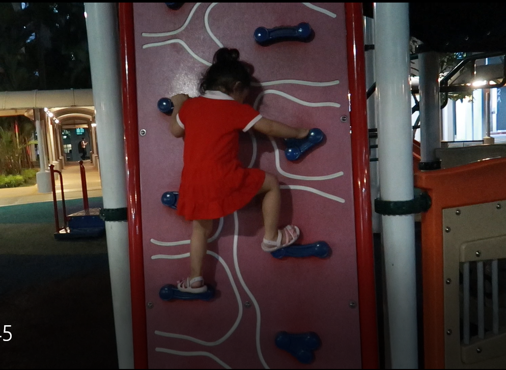 </a> <div style="display:block;font-size:90%"></div> </div></div>  <div><div class="wsite-image wsite-image-border-none " style="padding-top:10px;padding-bottom:10px;margin-left:0;margin-right:0;text-align:center"> <a>  </a> <div style="display:block;font-size:90%"></div> </div></div>  <div>  <!--BLOG_SUMMARY_END--></div>  <div class="paragraph"><span style="color:rgb(42, 42, 42)">Pero, nagulat ako kasi nakaya na niya 'to. To think na lagi namang sa kabilang playground kami nadayo. Siguro, andoon yun ung eagerness niya na&nbsp; makapagslide din. At.. nakikita niya yung ibang bata na kaya din nila.&nbsp;</span><br /><br /><span style="color:rgb(42, 42, 42)">Isa yan sa pansin namin sa kaniya. Lumalakas ang loob kapag may mga bata na nakikita niya na nagawa din.&nbsp;</span><br /><br /><span style="color:rgb(42, 42, 42)">Ng gabi na yaan, sobrang tagal namin diyan, at maya't maya siyang umakyat at nagslide. At sobrang bilis pa niya umakyat. Medyo takot nga ako kasi first time ko makita na ginagwa niya. Eh baka hindi ko maabangan agad. Mabigat na din si Yanah, baka ' d ko makayang saluhin incase magkamali siya.&nbsp;</span><br /><br />Pero wala namang nangyari sa knya. hahah.<br /><br /><span style="color:rgb(42, 42, 42)">Nakakatuwa! Thank you, Lord.</span><br /><br /><span style="color:rgb(42, 42, 42)">Looking forward na matry ni Yanah ung tunay na Rock climbing!</span><br /><span style="color:rgb(42, 42, 42)">&nbsp;</span><br /><span style="color:rgb(42, 42, 42)">Soon anak!</span><br /><br /><span style="color:rgb(42, 42, 42)">We are so proud of you!</span></div>]]></content:encoded></item><item><title><![CDATA[First time magbalat ng itlog!]]></title><link><![CDATA[https://whengodmadeyou.weebly.com/our-firsts-corner/october-08th-2019]]></link><comments><![CDATA[https://whengodmadeyou.weebly.com/our-firsts-corner/october-08th-2019#comments]]></comments><pubDate>Tue, 03 Sep 2019 16:00:00 GMT</pubDate><category><![CDATA[Uncategorized]]></category><guid isPermaLink="false">https://whengodmadeyou.weebly.com/our-firsts-corner/october-08th-2019</guid><description><![CDATA[           Sobrang happy si Mommy.&nbsp;Isa sa challenge sa akin araw araw ay ang pagpapakain kay Yanah.&nbsp;Naisip kong maglabon ng itlog. Para maengganyo siyang kumain, Siya ang pinagbalat ko!Effective!! Napakain ko ng ayos ayoa nakain niya yung aking niluto.&nbsp;Naexperience din niya na magbalat ng itlog ng siya lang.&nbsp;Dahil diyan, laking bagay! So sa twing kakain siya ng itlog na nilabon, siya ang ang pinagbabalat ko.&nbsp;Naisip ko din na baka kako masaktan si Yanah ahabang nagbabalat [...] ]]></description><content:encoded><![CDATA[<div><div class="wsite-image wsite-image-border-none " style="padding-top:10px;padding-bottom:10px;margin-left:0;margin-right:0;text-align:center"> <a> 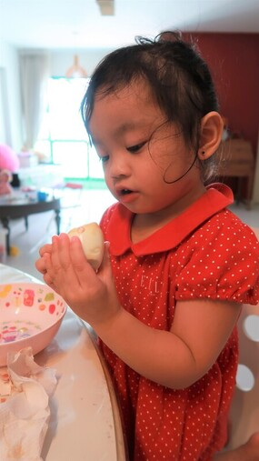 </a> <div style="display:block;font-size:90%"></div> </div></div>  <div>  <!--BLOG_SUMMARY_END--></div>  <div class="paragraph">Sobrang happy si Mommy.&nbsp;<br /><br />Isa sa challenge sa akin araw araw ay ang pagpapakain kay Yanah.&nbsp;<br /><br />Naisip kong maglabon ng itlog. Para maengganyo siyang kumain, Siya ang pinagbalat ko!<br /><br />Effective!! Napakain ko ng ayos ayoa nakain niya yung aking niluto.&nbsp;<br /><br />Naexperience din niya na magbalat ng itlog ng siya lang.&nbsp;<br /><br />Dahil diyan, laking bagay! So sa twing kakain siya ng itlog na nilabon, siya ang ang pinagbabalat ko.&nbsp;<br /><br />Naisip ko din na baka kako masaktan si Yanah ahabang nagbabalat. Mukhang enjoy naman siya at okey lang sa kniya. Kasi kung nasasaktan siya eh magsasabi yun ng "ouchy!"<br /><br />Thank you, Lord for this experience!</div>  <div><div class="wsite-image wsite-image-border-none " style="padding-top:10px;padding-bottom:10px;margin-left:0;margin-right:0;text-align:center"> <a> 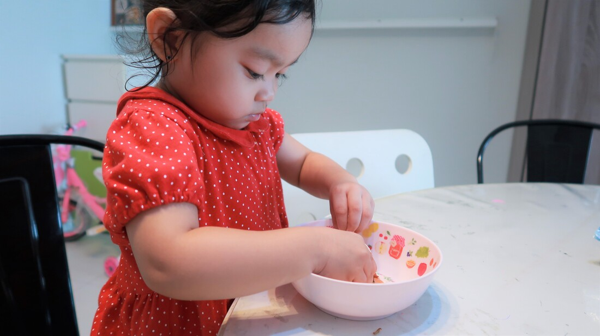 </a> <div style="display:block;font-size:90%"></div> </div></div>  <div><div class="wsite-image wsite-image-border-none " style="padding-top:10px;padding-bottom:10px;margin-left:0;margin-right:0;text-align:center"> <a> 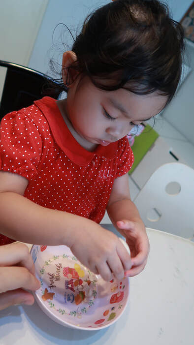 </a> <div style="display:block;font-size:90%"></div> </div></div>  <div><div class="wsite-image wsite-image-border-none " style="padding-top:10px;padding-bottom:10px;margin-left:0;margin-right:0;text-align:center"> <a> 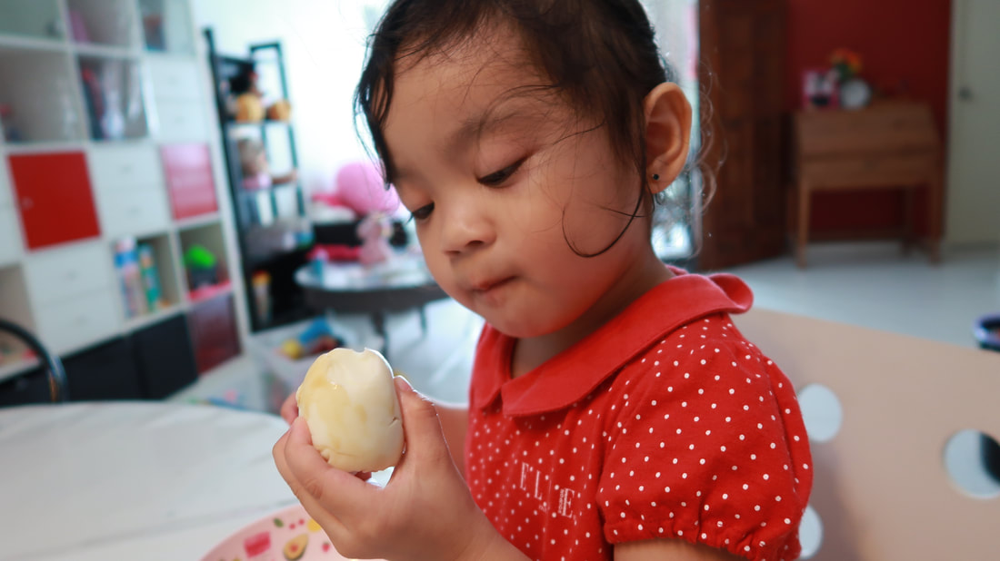 </a> <div style="display:block;font-size:90%"></div> </div></div>]]></content:encoded></item></channel></rss>